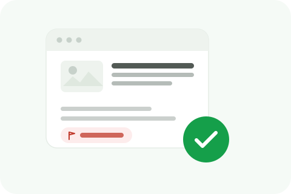

A host spends ten minutes of a popular episode naming your business directly, repeating an unverified complaint or an outright false claim, and that episode sits on every major podcast app indefinitely, discoverable by anyone who searches your name. Audio content has its own particular mechanics, no visible comment thread to flag, no single platform moderation queue, that make this a genuinely different removal problem than a video or a written article.

A podcast episode usually lives on the host's own hosting platform first, Libsyn, Buzzsprout, Spotify for Podcasters, and gets syndicated out to every app, Apple Podcasts, Spotify, Google Podcasts, that lists it, which means there's no single centralized moderation team the way there is on YouTube or a review platform. The actual content lives with the show's creator, and most individual listening apps simply mirror whatever the host's feed publishes, they don't independently moderate episode content on their own initiative.
If the host ignores your request or refuses to act, your options narrow considerably compared to a platform-hosted complaint process like a YouTube video takedown, since there's no equivalent centralized reporting flow built specifically for podcast content across every listening app. A genuinely defamatory claim may still warrant a formal legal demand sent to the host directly, but routine platform-level reporting tools, the kind that exist for reviews or social posts, generally don't exist in the same form here.
Even if the original host agrees to pull an episode, copies may already be cached, downloaded, or mirrored across multiple listening apps and aggregator sites, each with its own update cycle for reflecting the host's change. A correction at the source is the most reliable fix precisely because it propagates forward to anyone who streams or downloads the episode going forward, even though it can't retroactively undo copies already saved on someone's device.
Many podcasts publish a written transcript or detailed show notes alongside the audio, and that text version is independently indexable by search engines in a way the audio itself generally isn't on its own. Treat a damaging transcript the same way you'd treat any other written content making a false claim, it's a separate, directly searchable asset that needs its own specific correction request alongside whatever you're pursuing on the audio itself.
If your business operates in an industry with an active podcast ecosystem, building a cooperative relationship with the hosts who cover it before you ever need a correction makes a future request land very differently than a cold, first-contact complaint from a stranger. A host who already knows and trusts your business is simply far more likely to take a correction request seriously and act on it quickly.
We help identify the right contact, build the correction request, and monitor the broader fallout.